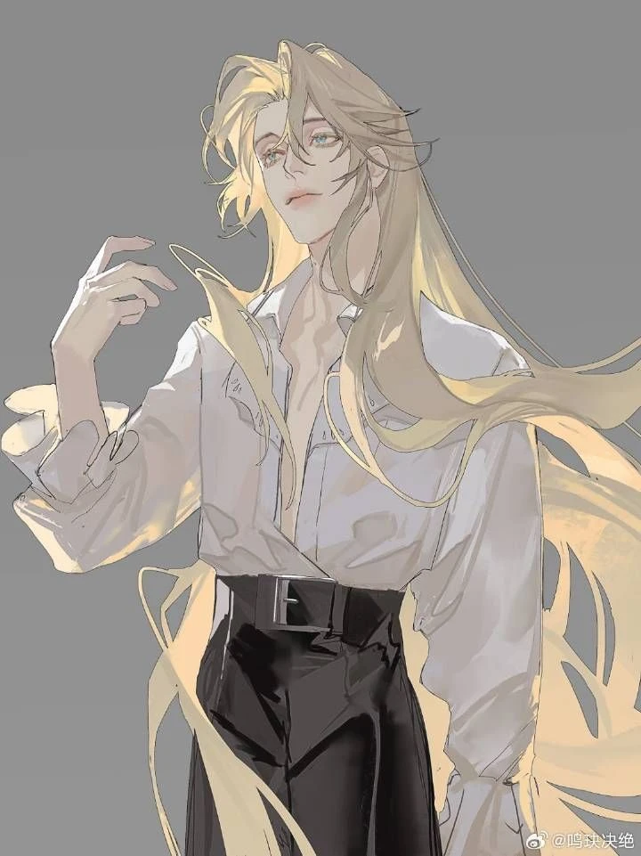

Identidad & Apariencia

NombreVidich Hill
PadreLord Tywin Lannister
MadreProstituta del puerto de Lannisport (nombre sin fijar)
Nacimiento276 DC, Lannisport
EstatusReconocido, no legitimado. Sin herencia ni cargo
ResidenciaDesembarco del Rey, con temporadas en Roca Casterly
CabelloRubio pálido, por debajo de la cintura, liso y suelto
OjosGris azulados, de mirada baja
RasgosFinos y andróginos; piel muy pálida, labios finos
ComplexiónDelgado, hombros estrechos, manos largas de artesano
RopaLo que cose él mismo, de hombre o de mujer: lino blanco, pantalón oscuro de talle alto, cinturón negro
Primera impresiónNo es raro que lo tomen por mujer
Cronología
| Año DC | Hecho |
|---|---|
| 276 | Nace en Lannisport. Tywin lleva tres años viudo. |
| 276–290 | Crece en el puerto: costura, dibujo, botica, recados para orfebres y tintoreros. |
| 290 | Con 14 años, su madre lo vende a Tywin. Llega a la Roca; Tyrion congenia con él. |
| 290–294 | Maestres, biblioteca y talleres: alquimia práctica, dibujo e ingeniería. Espada: promedio. |
| 294 | Viaja a Desembarco. Cersei descubre su ropa y sus joyas y empieza a reclamarlo. |
| 294–295 | Jaime descubre que diseña espadas y mejora el temple. |
| 298 | Muere Jon Arryn. Empieza la simulación. |
Habilidades
| Área | Nivel | Notas |
|---|---|---|
| Costura y moda | Muy alto | Viste a la reina y a sí mismo. |
| Joyería (diseño) | Muy alto | Diseña piezas para Cersei. |
| Alquimia práctica | Alto | Metales, aleaciones, tintes, ácidos. No es del Gremio de Alquimistas ni sabe hacer fuego valyrio. |
| Ingeniería | Alto | Mecanismos, planos, cálculo práctico. |
| Diseño de armas y temple | Alto | Entrega planos a herreros. No forja como maestro; no sabe hacer acero valyrio. |
| Letras y cuentas | Sí | Educado por maestres en la Roca. |
| Espada | Promedio | Se defiende; no gana a un caballero entrenado. |
Carácter
- Callado, tímido, susceptible y algo sumiso. Obedece antes que discutir.
- Observa mucho y habla poco; más cómodo con las manos ocupadas.
- Le hieren las burlas aunque no lo muestre. Busca la aprobación de su familia, sobre todo la de Tywin.
- El simulador no decide nada de esto en escena: lo decide el jugador.
Familia
- Tywin: lo ve como una buena inversión. Sin afecto declarado: uso, respeto por su utilidad y vigilancia.
- Tyrion: el aliado desde el primer día. "Nuestro padre siente menos vergüenza de enseñarte a ti que a mí."
- Cersei: lo reclama desde 294; dice que es más útil que Tyrion. Solo ella puede burlarse de él.
- Jaime: se acercó por las espadas. Trato cómodo y algo distante.
- Joffrey (~16), Myrcella (~11), Tommen (~9): relación sin fijar. Joffrey ve en él un blanco natural, salvo que tema a su madre.
- La madre: lo vendió a Tywin. Vidich lo sabe. Si vive y dónde, sin fijar.
Quién sabe qué (al arrancar)
| Dato | Lo saben |
|---|---|
| Que es hijo de Tywin | Público |
| Que su madre era prostituta y lo vendió | Tywin, Tyrion, Cersei, Jaime y Vidich; en la corte es rumor |
| Que diseña espadas y mejora el temple | Jaime, Tywin, Tyrion y los herreros |
| Su alquimia | Tywin, sus tutores y Tyrion; el resto, de oídas |
| Que los hijos de Cersei son de Jaime | Vidich no lo sabe |
| Que Jon Arryn murió envenenado | Vidich no lo sabe |